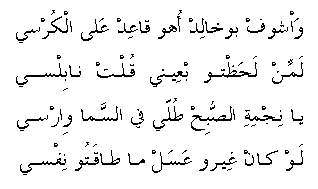

washoof bukhalid oho qa'id 'ala il-korsy
lammin laHaTHto ib'eeny qolt nabilsy
ya nijmit il-SobiH Tolly fissama wirsy
law kaan gheero 'asal ma Taaqato nifsy
I see (Abu Khalid) while he's sitting on the chair
When I looked at him, I said he could be from Nablus *
O, morning star, appear in the sky and be stable
If others were honey, I will not care for them
* Men from Nablus are considered classy